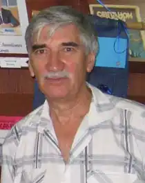

Качан Анатолій Леонтійович (літ. псевдонім Степан Воронець) народився 16 січня 1942 року в с. Гур'ївка, Новоодеського району на Миколаївщині. Батько, Леонтій Варфоломійович (1912 – 1989), працював там токарем машино-тракторної станції (МТС), відомої за кінокомедією режисера І. Пир'єва "Трактористи". Мати, Клавдія Василівна (1911–1986), теж мала технічну жилку, при потребі могла розібрати, а потім скласти деталі годинника чи швейної машини "Зінґер". Дитячі роки минули в сусідньому селі Новопетрівському, середню школу закінчив у селі Засілля Жовтневого району. Після школи працював монтером радіовузла, брав участь у передачах місцевого радіомовлення. На той період припадають його перші журналістські та літературні спроби. Друкуватися почав у 1962 році. Вищу освіту здобув на філологічному факультеті Одеського державного університету ім. І. І. Мечникова, захистивши дипломну роботу про українську новелістику 20-х років ХХ століття. Після закінчення університету 1965 року вчителював у містечку Вилкове на Одещині, служив у Криму, працював кореспондентом одеської обласної молодіжної газети "Комсомольська іскра", редактором видавництва "Маяк" в м. Одесі.
З 1971 року Анатолій Качан живе у Києві. Протягом тривалого часу очолював літературні відділи у дитячих журналах "Піонерія" (тепер "Однокласник"), "Барвінок", "Соняшник", республіканське літературне об'єднання школярів "Первоцвіт", а в газеті "Вечірній Київ" у роки її найвищої популярності вів сторінку дитячої творчості "Кораблик", яка згодом переросла в самостійне видання "Я Сам/Сама". 1975 року виходить у світ перша збірка письменника "Джерельце". 1979 року Анатолій Качан вступив до Спілки письменників України.
1982 року журналу "Піонерія" присуджено премію імені Миколи Трублаїні. 1988 року Анатолія Качана за роботу з розвитку творчих здібностей юних талантів нагороджено знаком "Відмінник освіти України" та медаллю імені А. С. Макаренка. 2001 року Анатолію Качану присвоєно звання "Заслужений працівник культури України", 2002 року його нагороджено медаллю "Будівничий України", а за збірку поезій "До синього моря хмаринка пливе" (2001) йому присуджено літературну премію імені Лесі Українки. В 1995 – 2003 роках Анатолій Качан працював у Міністерстві інформації України та Комітеті з Національної премії України імені Тараса Шевченка. З 2004 року він – голова творчого об'єднання дитячих письменників Київської організації НСПУ. Член редколегії журналу Спілки українських письменників Словаччини "Дукля" (м. Пряшів). 2004 року Анатолію Качану присуджено літературну премію імені Віктора Близнеця "Звук павутинки". 2006 року за систематизацію і популяризацію творчої спадщини Бориса Нечерди, а також за книгу власних віршів "Чари ворожбита" (2005) Анатолій Качан відзначений літературною премією імені Бориса Нечерди. 2008 року за підсумками Міжнародного Академічного Рейтингу популярності "Золота Фортуна" нагороджений орденом "За розбудову України" ім. М. Грушевського, а 2009 року йому присуджено літературно-мистецьку премію "Київ" імені Євгена Плужника. Анатолій Качан є лауреатом приватної літературно-мистецької премії Володимира Рутківського "Джури" 2014 року. Переможець VIIІ міжнародного літературного конкурсу творів для дітей та юнацтва "Корнійчуковська премія" у номінації "Поезія для дітей / Автори з України" (2020). Разом зі своїм племінником О. Зубовим, міжнародним гросмейстером, багаторазовим чемпіоном м. Миколаєва з шахів, був ініціатором проведення в місті корабелів Першого в Україні (2002 р.) та Другого (2011 р.), турнірів шахопоезії, присвячених пам'яті М. Вінграновського. У переліку творчих здобутків письменника – добірки поезій, що увійшли до шкільних підручників і посібників, численні публікації в зарубіжних виданнях, пісні, написані у співавторстві з відомими українськими композиторами, статті та інтерв'ю з проблем дитячої літератури.